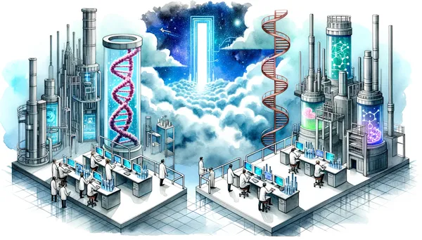

written by Eric J. Ma on 2023-07-24 | tags: data science technology ladder technological trinity decision making protein engineering methodologies innovation team building technical strategy bayesian optimization graph neural networks variational autoencoder machine learning library design lead optimization

In this post, I discuss how to decide which technological models to adopt in our work. I introduce two frameworks: the 'technological trinity' and the 'technology ladder'. The former helps us evaluate if a new technology is worth investing in, while the latter places it within a broader context. I illustrate these concepts using protein engineering as an example.
One of our DSAI interns asked an excellent question, "One of the attractive things about DSAI is its promotion of the use of a Journal Club for reviewing the latest literature. Do we put that latest stuff into our daily work much?"
I took this question and responded with the following ideas.
Firstly, keeping up with the latest literature is important because we need to know the latest methodologies. Doing so gives us a feel and, more importantly, a taste for technology. Developing that taste for tech is essential. It informs how we evaluate the performance of a model, the validity of a scientific conclusion, and more. Keeping up with the literature can help us find new talent to hire.
What comes next, then, is developing judgment for whether to invest time in the latest methodologies or not. To make that judgment call, we need a goal and frameworks to make those decisions. We work backwards from our goals, and the frameworks are the compasses we use to guide our choices.
I rely on two frameworks here. The first is what I call the technological trinity. The second is the technology ladder, which I adapted from my colleague Joshua Bishop. I want to expand on them here.
The technological trinity is us being able to answer "yes" to the following questions:
Point #3 is only sometimes articulated clearly, especially for those who work to make medicines. We're only sometimes going to be sophisticated technically and mathematically. Still, without a strong foundation, we'll be assembling Rube Goldberg machines that may work now, may not be architected for the long term, and may not be attractive to individuals of the next level of technical sophistication, thus limiting innovation.
If the answer is "yes" to all three of those questions, then we can invest our time in doing a build-out. If any of them gets a "no" from us, then there will be a risk that we must weigh.
The technology ladder is a framework for placing that new tech or method within a broader context. For a given method, we identify a simpler version of that tech/method that achieves the same goals. We also imagine a more complex version that achieves the same goals, but it may come with more bells and whistles, such as efficiency gains or capability expansions. The price we pay is the need for skilled individuals to build and maintain those shiny things.
I used the example of library design methods in protein engineering to illustrate this. One way of designing libraries can involve prior training data for an enzyme's activity. How do we build a system that does this?
At the bottom of the technology ladder, we can generate mutations by randomly sampling single, double, triple, or more. Our coverage of mutational space would be highly sparse; we would be navigating blindfolded. Anyone skilled in Python could write this code quickly, as it is essentially just a string mutation problem.
One rung up the ladder, we might incorporate evolutionary information. One method would be to train a variational autoencoder on evolutionarily related sequences retrieved via BLAST. Doing so would be akin to navigating sequence space with signposts (evolutionary examples). To build this out in-house, we need to find a skilled individual who has built variational autoencoder models before, understands at least the one-hot encoding representation of protein sequences, and knows tricks for stably training a VAE.
Another rung up the ladder would be to use protein language models, which came later than variational autoencoder models, trained on the space of observed protein sequences. Using this class of models productively would require someone who has worked with language models before, understands tokenization and embeddings, and understands the caveats of using language models and how they differ from evolutionary models of proteins.
Another rung up the ladder is to use graph representations of protein structures. Using this class of models productively requires an individual who has worked with GNNs, ideally understands protein structural biochemistry, and has training in biophysics. They would also need to be comfortable wrangling an ever-evolving landscape of graph neural network tooling (torch-geometric, Graphein, etc.), with bonus points if they are also core developers on those tools.
And yet another rung up the ladder would be to find someone who could train diffusion models of protein structure. As of writing, no established tooling exists to do this robustly; it is an active area of research. At this point, the pool of candidates would likely be current Ph.D. students in academic research labs.
A side rung on a parallel technological ladder would be to incorporate the use of uncertainties in our sequence-function models. Here, we need someone trained in Bayesian optimization who understands ensemble neural networks and knows how to hook up a VAE to an ensemble predictor to traverse latent space to design a library that maximizes the posterior probability of superiority compared to a lead candidate. There's ample literature to support the incorporation of Bayesian optimization into library designs - with efficiency gains in exploring sequence space being the payoff.
Now, we have to step back and ask: to what end are we interested in using models for protein engineering? What is the fundamental value proposition here? How do we gain leverage -- efficiency gains or entirely new capabilities?
Working backwards, the most obvious application of these models is in the lead optimization of a candidate. For lead optimization, our goal with these models is to help us navigate protein sequence space more efficiently and get us to an optimized candidate faster than humans would be able to do so. If we're on the technology ladder rung where we can use protein language models and VAEs to design libraries, we have a choice. Given a fixed staff count to work on such problems, do we invest in pushing toward protein structure ML models, or do we support incorporating uncertainty in our workflows?
I will note that these are not mutually exclusive decisions: in an unconstrained world, we'd push on both and meld them together. But we live in a world with constraints.
At this point, the Tech Trinity framework can help us decide.
What about Bayesian optimization of library designs? What is the theoretical grounding, and is it sound?
Here lies a judgment call to make, each with a tradeoff - an especially stark one if only increasing the team's staffing count can allow us to pursue both options in parallel.
We can contextualize each piece of technology as being rungs in a ladder. Within each ladder, different tech versions accomplish the same broad goals but vary in the demands of the people involved in making it happen. The further we climb the ladder, the more likely tech will be highly experimental, unsupported, and immature. But it would also be exciting, attractive, and a signal of highly sophisticated technological maturity.
The lower the position on the technology ladder, the more commoditized and mature that tech would be, and the more likely there will be a vendor to support that. But it would also be boring and need more attraction factors for the most motivated individuals who would be able to generate innovations that unleash new value.
Which do we choose? We must weigh the tradeoffs. We don't always have to use methods and tools at the top of a technological ladder, but we do have to be constantly aware of what the top ladder rung looks like.
Simultaneously, there is a technological trinity of (1) goals, (2) personnel, and (3) technical strategy that we must address when we think about what tech to adopt or build. Staying at the forefront of tech is nice and cool, but we must also ensure that it's not a piecemeal effort but a concerted one the team is building towards.
If you've made it this far, thank you for reading! This post detailed my framework for navigating technology decisions. If you found it helpful, do leave me a comment below!
@article{
ericmjl-2023-climbing-the-tech-ladder-or-staying-grounded-a-guide-to-navigating-data-science-innovations,
author = {Eric J. Ma},
title = {Climbing the Tech Ladder or Staying Grounded? A Guide to Navigating Data Science Innovations},
year = {2023},
month = {07},
day = {24},
howpublished = {\url{https://ericmjl.github.io}},
journal = {Eric J. Ma's Blog},
url = {https://ericmjl.github.io/blog/2023/7/24/climbing-the-tech-ladder-or-staying-grounded-a-guide-to-navigating-data-science-innovations},
}
I send out a newsletter with tips and tools for data scientists. Come check it out at Substack.
If you would like to sponsor the coffee that goes into making my posts, please consider GitHub Sponsors!
Finally, I do free 30-minute GenAI strategy calls for teams that are looking to leverage GenAI for maximum impact. Consider booking a call on Calendly if you're interested!